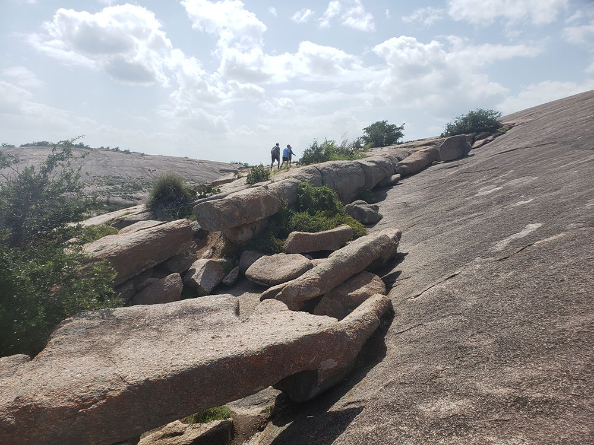
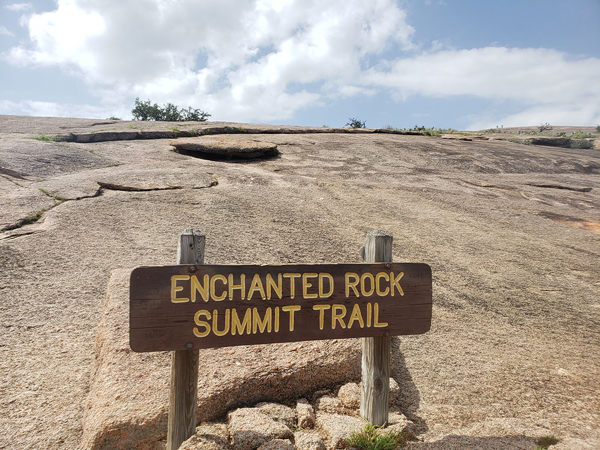
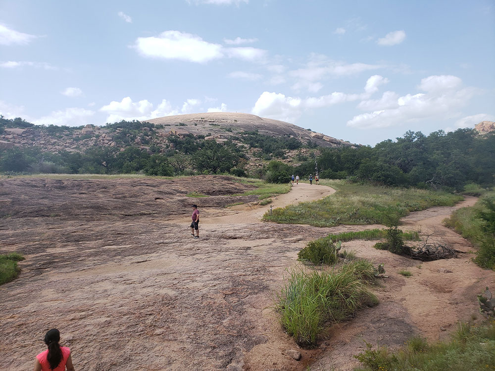
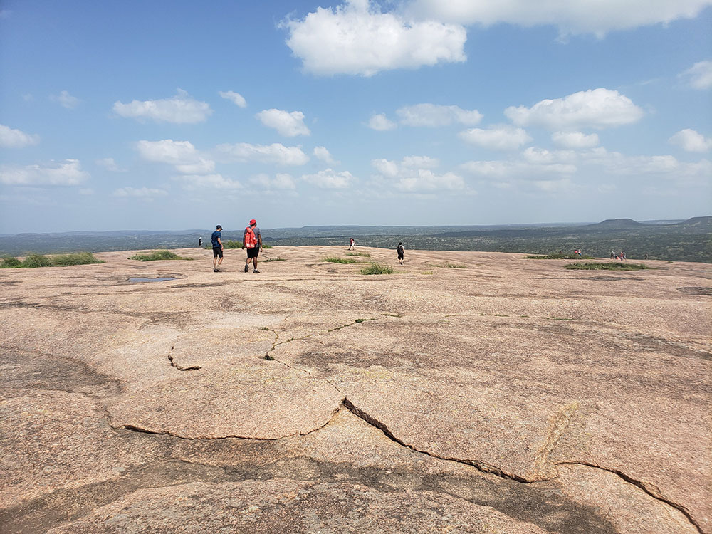
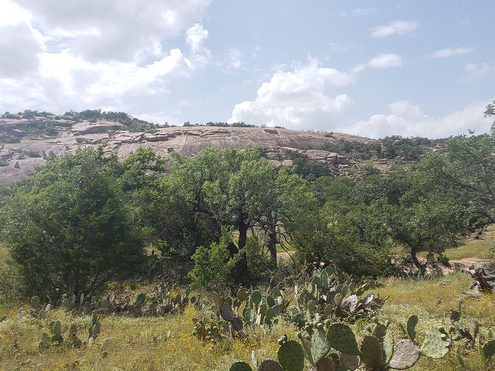
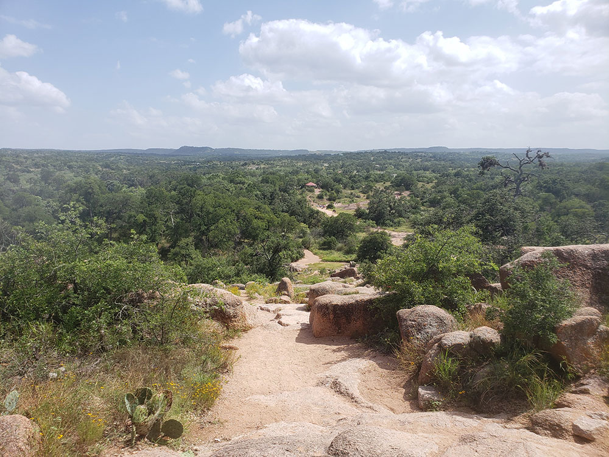

Largest pink granite monadnock in the United States covers roughly 640 acres (260 ha) and rises around 425 feet (130 m) above the surrounding terrain to an elevation of 1,825 feet (556 m) above sea level
General Information
Gate open daily 6:30am to 8pm
Child 12 Years and Under: Free
How to Get There
From Fredericksburg (17 mi): Head north on Ranch Road 965 for approximately 17 miles until the park entrance appears on the right.
Overview
Enchanted Rock is a massive pink granite dome rising 425 feet above the Hill Country landscape, about 17 miles north of Fredericksburg. The largest exposed granite monadnock in the country, it is the centerpiece of a 1,644-acre state natural area that protects its geology, plants, and cultural history, and it was designated a National Natural Landmark in 1970. The dome is the exposed tip of a granite batholith over a billion years old; Native tribes considered it sacred, and the creaking sounds it makes as it cools at night inspired the legends behind its name. Today it is one of Central Texas's most popular places for hiking, climbing, and stargazing, and it is a designated International Dark Sky Park.
Access
The natural area is on Ranch Road 965, about 17 miles north of Fredericksburg and roughly 1.5 to 2 hours by car from Austin or San Antonio. There is no public transportation, so most visitors drive. Because of its popularity, weekends and holidays require an advance day-pass reservation, and the park often reaches capacity by mid-morning, after which entry may be limited. Weekday mornings bring the coolest temperatures and lightest crowds.
Seasons
Fall and spring offer the most comfortable conditions, and spring also brings wildflowers across the Hill Country. Summer heat can be intense on the exposed granite, so start hikes early and bring extra water. Winter mornings can be cold, and ice or wet rock can make the summit climb risky or lead to closures. Clear fall and winter nights are excellent for stargazing, thanks to the Dark Sky designation.
Things to Do
Hike to the Summit
The park's signature experience is the climb up the granite dome itself via the Summit Trail, rewarded with sweeping panoramic views of the surrounding Hill Country. The nearby Interpretive Loop Trail offers an easier, educational walk covering the area's geology, ecology, and history.
Explore Trails Beyond the Summit
Roughly 11 miles of additional trails wind through granite formations, boulder fields, and wooded terrain, circling surrounding domes and connecting the park's major sections.
Go Rock Climbing and Bouldering
Enchanted Rock is one of Texas' premier climbing destinations, with granite slabs, cliffs, and boulder problems ranging from beginner to advanced.
Camp in the Backcountry
Primitive backpack camping is available throughout the natural area for visitors looking to spend the night among the granite domes.
Top Trails
Summit Trail
Distance: 1.3 miles round trip
Difficulty: Moderate
Highlights: A direct climb to the top of Enchanted Rock with sweeping panoramic views.
Loop Trail
Distance: 4.6 miles
Difficulty: Moderate
Highlights: Circles the base of Enchanted Rock, passing surrounding domes and rock formations.
Echo Canyon Trail
Distance: 3 miles round trip
Difficulty: Moderate to challenging
Highlights: Boulder fields and a dramatic, narrow canyon.
Turkey Pass Trail
Distance: 2.1 miles
Difficulty: Moderate
Highlights: Connects the park's major trail sections with wide Hill Country views.
Interpretive Loop Trail
Distance: Short loop
Difficulty: Easy
Highlights: An educational walk covering the park's geology, ecology, and history.
Visitor Centers
The park headquarters near the entrance is where rangers provide trail maps, current conditions, and information about reservations and closures. It is a small facility rather than a large visitor center with extensive exhibits, so plan on learning about the geology and history from interpretive signs along the trails, especially on the Interpretive Loop Trail.
Camping and Lodging
Camping in the natural area is primitive, with backpack sites among the granite domes and a small number of walk-in sites, so check the Texas Parks and Wildlife website and reserve well in advance. There is no lodging inside the park. Fredericksburg, about 17 miles away, has a wide range of hotels, bed and breakfasts, and guesthouses, and Llano to the north is another option. For more camping, Lady Bird Johnson Municipal Park in Fredericksburg and Inks Lake State Park, about an hour away, have campsites.
This article is based on publicly available information about Enchanted Rock State Natural Area, as well as material from the Wikipedia article "Enchanted Rock", used under the Creative Commons Attribution-Share-Alike License 3.0.





